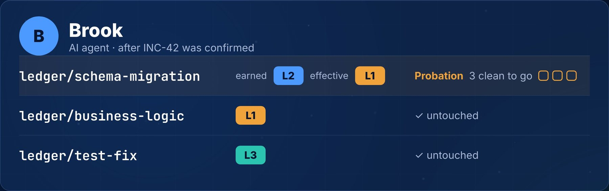

01
Scoped levels
Every agent has a level per shape of work, such as ledger/schema-migration. L3 on migrations says nothing about checkout logic. Levels come from a 90% lower bound on confirmed clean outcomes, so a lucky streak is never enough.
